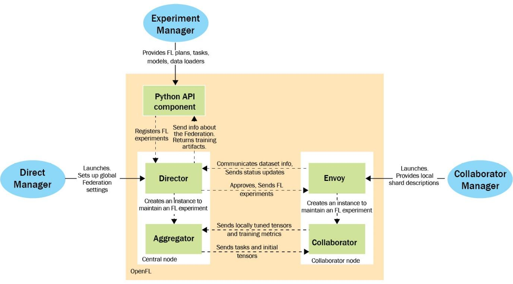
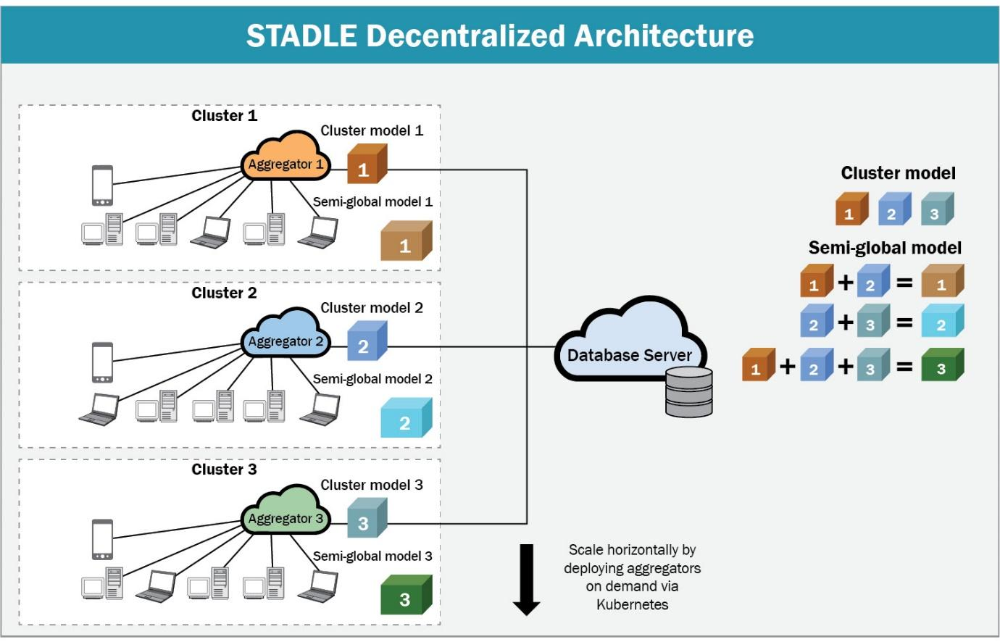
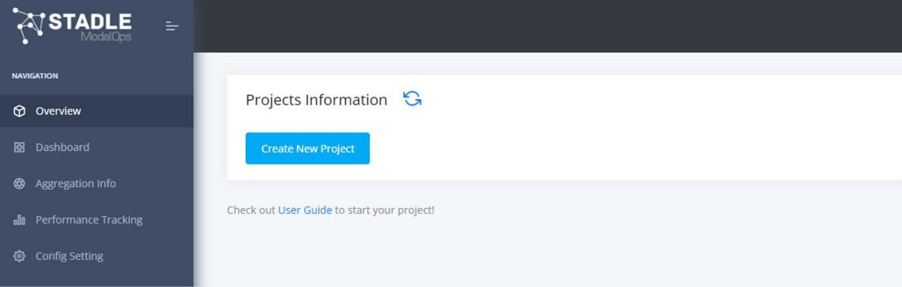
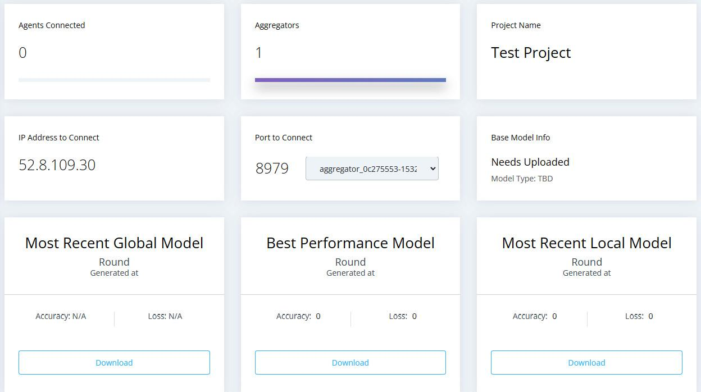

16 Introducing Existing Federated Learning Frameworks
Introducing Existing Federated Learning Frameworks
-
The objective of This section is to introduce existing federated learning (FL) frameworks and platforms, applying each to federated learning scenarios involving toy machine learning (ML) problems.
-
The platforms focused on Here are Flower, TensorFlow Federated, OpenFL, IBM FL, and STADLE -- the idea behind this selection was to help you by covering a breadth of existing FL platforms.
-
By the end of This section, you should have a basic understanding of how to use each platform for FL, and you should be able to choose a platform based on its associated strengths and weaknesses for an FL application.
-
Here, we will cover the following topics:
-
Implementations of an example NLP FL task on movie review dataset, using existing frameworks
-
Implementations of example computer vision FL task with non-IID datasets, using existing frameworks
Technical requirements
-
You can find the supplemental code files for This section in the book's GitHub repository:
-
https://github.com/PacktPublishing/Federated-Learning-with-Python
-
Each implementation example Here was run on an x64 machine running Ubuntu 20.04.
-
The implementation of the training code for the NLP example requires the following libraries to run:
-
NumPy
-
TensorFlow (version ≥ 2.9.1)
-
TensorFlow Hub (pip install tensorflow-hub)
-
TensorFlow Datasets (pip install tensorflow-datasets)
-
TensorFlow Text (pip install tensorflow-text)
- The implementation of the training code for the non-IID (non-independent and identical distribution) computer vision example requires the following libraries to run:
-
NumPy
-
PyTorch (version ≥ 1.9)
-
Torchvision (version ≥ 0.10.0, tied to PyTorch version)
TensorFlow Federated
- You can install the following libraries to use TFF:
- nest_asyncio (using the pip install nest_asyncio command)
OpenFL
-
You can install OpenFL using pip install openfl.
-
Alternatively, you can build from source with the following commands:
git clone https://github.com/intel/openfl.git
cd openfl
pip install .
CopyExplain
IBM FL
- Installing the locally hosted version of IBM FL requires the wheel installation file located in the code repository. To perform this installation, run the following commands:
git clone https://github.com/IBM/federated-learning-lib.git
cd federated-learning-lib
pip install federated_learning_lib-*-py3-none-any.whl
CopyExplain
Flower
= You can install Flower using the pip install flwr command.
STADLE
- You can install the STADLE client-side library using the pip install stadle-client command.
Introduction to FL frameworks
- First, we introduce the FL frameworks and platforms to be used in the subsequent implementation-focused sections.
Flower
-
Flower ([https://flower.dev/]{.underline}) is an open source and ML framework-agnostic FL framework that aims to be accessible to users. Flower follows a standard client-server architecture, in which the clients are set up to receive the model parameters from the server, train on local data, and send the new local model parameters back to the server.
-
The high-level orchestration of the federated learning process is dictated by what Flower calls strategies, used by the server for aspects such as client selection and parameter aggregation.
-
Flower uses Remote Procedure Calls (RPCs) in order to perform said orchestration through client-side execution from messages sent by the server. The extensibility of the framework allows researchers to experiment with novel approaches such as new aggregation algorithms and communication methods (such as model compression).
TensorFlow Federated (TFF)
-
TFF ([https://www.tensorflow.org/federated]{.underline}) is an open source FL/computation framework built on top of TensorFlow that aims to allow researchers to easily simulate federated learning with existing TensorFlow/Keras models and training pipelines.
-
It consists of the Federated Core layer, which allows for the implementation of general federated computations, and the Federated Learning layer, which is built on top and provides interfaces for FL-specific processes.
-
TFF focuses on single-machine local simulations of FL, using wrappers to create TFF-specific datasets, models, and federated computations (core client and server computation performed during the FL process) from the standard TensorFlow equivalents.
-
The focus on building everything from general federated computations allows researchers to implement each step as desired, allowing experimentation to be supported.
OpenFL
-
OpenFL ([https://github.com/intel/openfl]{.underline}) is an open source FL framework developed by Intel, focused on allowing cross-silo privacy-preserving ML to be performed.
-
OpenFL allows for two different workflows depending on the desired lifespan of the federation (where federation refers to the entire FL system).
-
In the aggregator-based workflow, a single experiment and associated federated learning plan are sent from the aggregator to the participating collaborators (agents) to be run as the local training step of the FL process---the federation is stopped after the experiment is complete. In the director-based workflow, long-lived components are instead used to allow for experiments to be run on demand.
-
The following diagram depicts the architecture and users for the director-based workflow:
{width="6.268055555555556in" height="3.473611111111111in"}
Figure 8.1 -- Architecture of director-based workflow (adapted from https://openfl.readthedocs.io/en/latest/source/openfl/components.html)
-
Director Manager oversees the running of experiments, working with long-lived Envoy components residing on the collaborator nodes to manage the short-lived components (collaborators + aggregator) for each experiment.
-
In targeting the cross-silo data scenario, OpenFL applies a unique focus on managing data shards, including cases where data representations differ across silos.
IBM FL
-
IBM FL is a framework that also focuses on enterprise FL. It follows a straightforward aggregator-party design, where some number of parties with local data collaborate with other parties by sending incremental model training results to the aggregator and working with the produced aggregate models (following standard client-server FL architecture).
-
IBM FL has official support for a number of fusion (aggregation) algorithms and certain fairness techniques aimed at combating bias---the details of these algorithms can be found at the repository located at https://github.com/IBM/federated-learning-lib.
-
One specific goal of IBM FL is to be highly extensible, allowing users to easily make necessary modifications if specific features are desired. It also supports a Jupyter-Notebook-based dashboard to aid in orchestrating FL experiments.
STADLE
-
Unlike the previous frameworks, STADLE ([https://stadle.ai/]{.underline}) is an ML-framework-agnostic FL and distributed learning SaaS platform that aims to allow for the seamless integration of FL into production-ready applications and ML pipelines.
-
The goal of STADLE is to minimize the amount of FL-specific code necessary for integration, making FL accessible to newcomers while still providing flexibility to those looking to experiment.
-
With the STADLE SaaS platform, users of varying technical abilities can collaborate on FL projects at all scales.
-
Performance tracking and model management functionalities allow users to produce validated federated models with strong performance, while an intuitive configuration panel allows for detailed control over the federated learning process.
-
STADLE uses a two-level component hierarchy that allows for multiple aggregators to operate in parallel, scaling to match demand. The following figure depicts the high-level architecture:
{width="6.268055555555556in" height="4.026388888888889in"}
Figure 8.2 -- STADLE multi-aggregator architecture
- Development of STADLE clients is streamlined with pip installation and an easy-to-understand configuration file, with several examples made publicly available for use as a reference on the different ways STADLE can be integrated into existing ML code.
PySyft
-
While PySyft ([https://github.com/OpenMined/PySyft]{.underline}) implementations are not included in this section due to ongoing changes in the codebase, it is still a major player in the privacy-preserving deep learning space.
-
The core principle behind PySyft is to allow for the ability to perform computations over data stored on a machine without direct access to said data ever being given.
-
This is accomplished by adding an intermediate layer between the user and the data location that sends computation requests to participating worker machines, returning the computed result to the user while maintaining the privacy of the data stored and used by each worker to perform the computation.
-
This general capability directly extends itself to FL, reworking each step of a normal deep learning training flow to be a computation over the model parameters and data stored at each worker (agent) participating in FL.
-
To accomplish this, PySyft utilizes hooks that encapsulate the standard PyTorch/TensorFlow libraries, modifying the requisite internal functions in order to allow model training and testing to be supported as PySyft privacy-preserving computations.
-
Now that the high-level ideas behind the FL frameworks have been explained, we move to the implementation-level details for their practical usage in two example scenarios. First, we look at how to modify the existing centralized training code for an NLP model to use FL.
Example -- the federated training of an NLP model
-
The first ML problem that will be converted into an FL scenario through each of the aforementioned FL frameworks will be a classification problem within the domain of NLP.
-
At a high level, NLP refers to the intersection of computational linguistics and ML with an overarching goal of allowing computers to achieve some level of understanding from human language -- the details of this understanding vary widely based on the specific problem being targeted.
-
For this example, we will be performing sentiment analysis on movie reviews, classifying them as positive or negative. The dataset we will be using is the SST-2 dataset (https://nlp.stanford.edu/sentiment/), containing movie reviews in a string format and the associated binary labels 0/1 representing negative and positive sentiment, respectively.
-
The model we will use to perform binary classification is a pretrained BERT model with a custom classification head.
-
The BERT model allows us to encode a sentence into a high-dimensional numerical vector, which can then be passed to the classification head to output the binary label prediction; more information on the BERT model can be found at https://huggingface.co/blog/bert-101.
-
We choose to use a pretrained model that has already learned how to produce general encodings for sentences after a significant amount of training, as opposed to performing said training from scratch. This allows us to focus training on the classification head to fine-tune the model on the SST-2 dataset, saving time while maintaining performance.
-
We will now go through the local (centralized) training code that will be used as a base when showing how to use each of the FL frameworks, starting with the Keras model definition and dataset loader.
Defining the sentiment analysis model
-
The SSTModel object defined in the sst_model.py file is the Keras model we will be using for this example.
-
First, we import the requisite libraries:
import tensorflow as tf
from tensorflow import keras
from keras import layers
import tensorflow_text
import tensorflow_hub as hub
import tensorflow_datasets as tfds
CopyExplain
-
TensorFlow Hub is used to easily download the pretrained BERT weights into a Keras layer. TensorFlow Text is used when loading in the BERT weights from TensorFlow Hub. TensorFlow Datasets will allow us to download and cache the SST-2 dataset.
-
Next, we define the model and initialize the model layer objects:
class SSTModel(keras.Model):
def __init__(self):
super(SSTModel, self).__init__()
self.preprocessor = hub.KerasLayer(\"https://tfhub.dev/tensorflow/bert_en_uncased_preprocess/3\")
self.small_bert = hub.KerasLayer(\"https://tfhub.dev/tensorflow/bert_en_uncased_L-12_H-768_A-12/4\")
self.small_bert.trainable = False
self.fc1 = layers.Dense(512, activation=\'relu\')
self.fc2 = layers.Dense(64, activation=\'relu\')
self.fc3 = layers.Dense(1, activation=\'sigmoid\')
CopyExplain
-
The preprocessor object takes the raw sentence input batches and converts them into the format used by the BERT model.
-
We load the preprocessor and BERT layers from TensorFlow Hub, then initialize the dense layers that make up the classification head. We use the sigmoid activation function at the end to squash the output into the interval (0,1), allowing for comparison with the true labels.
-
We can then define the forward pass of the model:
def call(self, inputs):
input_dict = self.preprocessor(inputs)
bert_output = self.small_bert(input_dict)[\'pooled_output\']
output = self.fc1(keras.activations.relu(bert_output, alpha=0.2))
scores = self.fc3(self.fc2(output))
return scores
CopyExplain
- We apply leaky ReLU to the BERT output to add non-linearity before passing the output to the classification head layers.
Creating the data loader
- We also implement a function to load in the SST-2 dataset using the TensorFlow Datasets library. First, the training data is loaded and converted into a NumPy array for use during training:
def load_sst_data(client_idx=None, num_clients=1):
x_train = []
y_train = []
for d in tfds.load(name=\"glue/sst2\", split=\"train\"):
x_train.append(d[\'sentence\'].numpy())
y_train.append(d[\'label\'].numpy())
x_train = np.array(x_train)
y_train = np.array(y_train)
CopyExplain
- We load the test data in a similar manner:
x_test = []
y_test = []
for d in tfds.load(name=\"glue/sst2\", split=\"validation\"):
x_test.append(d[\'sentence\'].numpy())
y_test.append(d[\'label\'].numpy())
x_test = np.array(x_test)
y_test = np.array(y_test)
CopyExplain
- If client_idx and num_clients are specified, we return the respective partition of the training dataset -- this will be used for performing FL:
if (client_idx is not None):
shard_size = int(x_train.size / num_clients)
x_train = x_train[client_idx*shard_size:(client_idx+1)*shard_size]
y_train = x_train[client_idx*shard_size:(client_idx+1)*shard_size]
return (x_train, y_train), (x_test, y_test)
CopyExplain
- Next, we examine the code to perform local training, located in local_training.py.
Training the model
- We first import the requisite libraries:
import tensorflow as tf
from tensorflow import keras
from sst_model import SSTModel, load_sst_data
CopyExplain
- We can then use the previously defined dataset loader (without splitting) to load in the train and test splits:
(x_train,y_train), (x_test,y_test) = load_sst_data()
CopyExplain
- We can now compile the model and begin training:
model.compile(
optimizer = keras.optimizers.Adam(learning_rate=0.0005, amsgrad=False),
loss = keras.losses.BinaryCrossentropy(),
metrics = [keras.metrics.BinaryAccuracy()]
)
model.fit(x_train, y_train, batch_size=64, epochs=3)
CopyExplain
- Finally, we evaluate the model on the test split:
_, acc = model.evaluate(x_test, y_test, batch_size=64)
print(f\"Accuracy of model on test set: {(100*acc):.2f}%\")
CopyExplain
-
The model should reach around 82% test accuracy after three epochs of training.
-
Now that we have gone through the local training code, we can examine how the code can be modified to use FL with each of the aforementioned FL frameworks.
Adopting an FL training approach
-
To demonstrate how FL can be applied to the SST model training scenario, we have to first split the original SST-2 dataset into disjoint subsets representing the local datasets in an FL application. To keep things simple, we will examine the case of three agents each training on separate thirds of the dataset.
-
For now, these subsets are randomly sampled without replacement from the dataset -- in the next section, Federated training of an image classification model on non-IID data, we examine the case where the local datasets are created from a biased sampling of the original dataset. Instead of locally training for three epochs, we will perform three rounds of FL with each local training phase training for one epoch on the local data.
-
FedAvg will be used to aggregate the locally trained models at the end of each round. After these three rounds, the aforementioned validation metrics will be computed using the final aggregate model, allowing for comparisons to be drawn between the local training cases and the FL case.
Integrating TensorFlow Federated for SST-2
-
As previously mentioned, the TensorFlow Federated (TFF) framework was built on top of the TensorFlow and Keras deep learning libraries. The model implementation was done using Keras; as a result, the integration of TFF into the local training code is relatively straightforward.
-
The first step is to add the TFF-specific imports and FL-specific parameters prior to loading the dataset:
import nest_asyncio
nest_asyncio.apply()
import tensorflow_federated as tff
NUM_CLIENTS = 3
NUM_ROUNDS = 3
CopyExplain
- TFF allows us to simulate some number of agents by passing the appropriate number of datasets (local datasets) to the FL process. To split the SST-2 dataset into thirds after preprocessing, we can use the following code:
client_datasets = [load_sst_data(idx, NUM_CLIENTS)[0] for idx in range(NUM_CLIENTS)]
CopyExplain
- Next, we have to wrap the Keras model using a TFF API function to easily create the respective tff.learning.Model object. We create a function that initializes the SST model and passes it along with the input spec (information on the size of each data element) to this API function, returning the result -- TFF will use this function internally to create the model during the FL process:
def sst_model_fn():
sst_model = SSTModel()
sst_model.build(input_shape=(None,64))
return tff.learning.from_keras_model(
sst_model,
input_spec=tf.TensorSpec(shape=(None), dtype=tf.string),
loss=keras.metrics.BinaryCrossentropy()
)
CopyExplain
- The TFF FedAvg process can then be created, using the sst_model_fn function along with the optimizers used to update the local models and the aggregate model. Using a learning rate of 1.0 for the server optimizer function allows for the new aggregate model to replace the old one at the end of each round (as opposed to computing a weighted average of the old and new models):
fed_avg_process = tff.learning.algorithms.build_unweighted_fed_avg(
model_fn = sst_model_fn,
client_optimizer_fn = lambda: keras.optimizers.Adam(learning_rate=0.001),
server_optimizer_fn = lambda: keras.optimizers.SGD(learning_rate=1.0)
)
CopyExplain
- Finally, we initialize and run the federated learning process for 10 rounds. Each fed_avg_process.next() call simulates one round by performing local training with three models on the client datasets followed by aggregation using FedAvg. The resulting state after the first round is passed to the next call as the starting FL state for the round:
state = fed_avg_process.initialize()
for round in range(NUM_ROUNDS):
state = fed_avg_process.next(state, client_datasets).state
CopyExplain
- After the FL process is completed, we convert the final aggregate tff.learning.Model object back into the original Keras model format in order to compute the validation metrics:
fed_weights = fed_avg_process.get_model_weights(state)
fed_sst_model = SSTModel()
fed_sst_model.build(input_shape=(None, 64))
fed_sst_model.compile(
optimizer = keras.optimizers.Adam(learning_rate=0.005, amsgrad=False),
loss = keras.losses.BinaryCrossentropy(),
metrics = [keras.metrics.BinaryAccuracy()]
)
fed_weights.assign_weights_to(fed_sst_model)
_, (x_test, y_test) = load_sst_data()
_, acc = fed_sst_model.evaluate(x_test, y_test, batch_size=64)
print(f\"Accuracy of federated model on test set: {(100*acc):.2f}%\")
CopyExplain
-
The final accuracy of the aggregate model should be around 82%.
-
From this, it should be clear that the TFF FedAvg results are nearly identical to those of the local training scenario.
Integrating OpenFL for SST-2
-
Recall that OpenFL supports two different workflows: the aggregator-based workflow and the director-based workflow. This example will use the director-based workflow, involving long-living components that can conduct FL task requests as they come in. This was chosen due to the desirability of having a persistent FL setup for deploying multiple projects; however, both workflows conduct the same core FL process and thus demonstrate similar performance.
-
To help with model serialization in this case, we only aggregate the classification head weights, reconstructing the full model at runtime during training and validation (TensorFlow Hub caches the downloaded layers, so the download process only occurs once). We include the following functions in sst_model.py to aid with this modification:
def get_sst_full(preprocessor, bert, classification_head):
sst_input = keras.Input(shape=(), batch_size=64, dtype=tf.string)
scores = classification_head(bert(preprocessor(sst_input))[\'pooled_output\'])
return keras.Model(inputs=sst_input, outputs=scores, name=\'sst_model\')
def get_classification_head():
classification_head = keras.Sequential([
layers.Dense(512, activation=\'relu\', input_shape=(768,)),
layers.Dense(64, activation=\'relu\', input_shape=(512,)),
layers.Dense(1, activation=\'sigmoid\', input_shape=(64,))
])
return classification_head
CopyExplain
-
Because OpenFL focuses on addressing the data silo case, the creation of the local datasets from the SST-2 data is slightly more involved than the TFF case. The objects needed to create the dataset will be implemented in a separate file named sst_fl_dataset.py.
-
First, we include the necessary imports. The two OpenFL-specific objects we import are the ShardDescriptor object, which handles the dataset loading and sharding, and the DataInterface object, which handles access to the datasets:
from openfl.interface.interactive_api.shard_descriptor import ShardDescriptor
from openfl.interface.interactive_api.experiment import DataInterface
import tensorflow as tf
from sst_model import load_sst_data
CopyExplain
Implementing ShardDescriptor
- We first implement the SSTShardDescriptor class. When this shard descriptor is created, we save the rank (client number) and worldsize (total number of clients) values, then load the training and validation datasets:
class SSTShardDescriptor(ShardDescriptor):
def __init__(
self,
rank_worldsize: str = \'1, 1\',
**kwargs
):
self.rank, self.worldsize = tuple(int(num) for num in rank_worldsize.split(\',\'))
(x_train,y_train), (x_test,y_test) = load_sst_data(self.rank-1, self.worldsize)
self.data_by_type = {
\'train\': tf.data.Dataset.from_tensor_slices((x_train, y_train)).batch(64),
\'val\': tf.data.Dataset.from_tensor_slices((x_test, y_test)).batch(64)
}
CopyExplain
- We implement the ShardDescriptor class functions to get the available dataset types (training and validation in this case) and the respective dataset/shard based on the rank of the client:
def get_shard_dataset_types(self):
return list(self.data_by_type)
def get_dataset(self, dataset_type=\'train\'):
if dataset_type not in self.data_by_type:
raise Exception(f\'Wrong dataset type: {dataset_type}\')
return self.data_by_type[dataset_type]
CopyExplain
- We also specify the properties of the specific dataset being used. Note that the sample shape is set to 1. The preprocessor layer of the SSTModel allows us to pass in strings as input, which are treated as input vectors of type tf.string and length 1:
@property
def sample_shape(self):
return [\"1\"]
@property
def target_shape(self):
return [\"1\"]
@property
def dataset_description(self) -> str:
return (f\'SST dataset, shard number {self.rank}\'
f\' out of {self.worldsize}\')
CopyExplain
- With this, the SSTShardDescriptor implementation is completed.
Implementing DataInterface
- Next, we implement the SSTFedDataset class as a subclass of DataInterface. This is done by implementing the shard descriptor getter and setter methods, with the setter method preparing the data to be provided to the training/validation FL tasks:
class SSTFedDataset(DataInterface):
def __init__(self, **kwargs):
super().__init__(**kwargs)
@property
def shard_descriptor(self):
return self._shard_descriptor
@shard_descriptor.setter
def shard_descriptor(self, shard_descriptor):
self._shard_descriptor = shard_descriptor
self.train_set = shard_descriptor.get_dataset(\'train\')
self.valid_set = shard_descriptor.get_dataset(\'val\')
CopyExplain
- We also implement the API functions to grant dataset access and dataset size information (used during aggregation):
def get_train_loader(self):
return self.train_set
def get_valid_loader(self):
return self.valid_set
def get_train_data_size(self):
return len(self.train_set) * 64
def get_valid_data_size(self):
return len(self.valid_set) * 64
CopyExplain
- With this, the local SST-2 datasets can be constructed and used.
Creating FLExperiment
- We now focus on the actual implementation of the FL process within a new file, fl_sim.py. First, we import the necessary libraries -- from OpenFL, we import the following:
-
ModelInterface: Allows us to convert our Keras model into the format used by OpenFL in the registered tasks
-
Federation: Manages information relating to the connection with the director
-
FLExperiment: Uses the TaskInterface, ModelInterface, and Federation objects to conduct the FL process
import tensorflow as tf
from tensorflow import keras
import tensorflow_hub as hub
from openfl.interface.interactive_api.experiment import TaskInterface
from openfl.interface.interactive_api.experiment import ModelInterface
from openfl.interface.interactive_api.experiment import FLExperiment
from openfl.interface.interactive_api.federation import Federation
from sst_model import get_classification_head, get_sst_full
from sst_fl_dataset import SSTFedDataset
CopyExplain
- Next, we create the Federation object using the default director connection information:
client_id = \'api\'
director_node_fqdn = \'localhost\'
director_port = 50051
federation = Federation(
client_id=client_id,
director_node_fqdn=director_node_fqdn,
director_port=director_port,
tls=False
)
CopyExplain
- We then initialize the model with the associated optimizer and loss function -- these objects are used by the OpenFL KerasAdapter to create the ModelInterface object. We call the model on a dummy Keras input in order to initialize all of the weights before passing the model to ModelInterface:
classification_head = get_classification_head()
optimizer = keras.optimizers.Adam(learning_rate=0.005, amsgrad=False)
loss = keras.losses.BinaryCrossentropy()
framework_adapter = \'openfl.plugins.frameworks_adapters.keras_adapter.FrameworkAdapterPlugin\'
MI = ModelInterface(model=classification_head, optimizer=optimizer, framework_plugin=framework_adapter)
CopyExplain
- Next, we create a TaskInterface object and use it to register the training task. Note that including the optimizer in the decorator function of a task will result in the training dataset being passed to the task; otherwise, the validation dataset will be passed to the task:
TI = TaskInterface()
\@TI.register_fl_task(model=\'model\', data_loader=\'train_data\', device=\'device\', optimizer=\'optimizer\')
def train(model, train_data, optimizer, device):
preprocessor = hub.KerasLayer(\"https://tfhub.dev/tensorflow/bert_en_uncased_preprocess/3\")
small_bert = hub.KerasLayer(\"https://tfhub.dev/tensorflow/bert_en_uncased_L-12_H-768_A-12/4\")
small_bert.trainable = False
full_model = get_sst_full(preprocessor, small_bert, model)
full_model.compile(loss=loss, optimizer=optimizer)
history = full_model.fit(train_data, epochs=1)
return {\'train_loss\':history.history[\'loss\'][0]}
CopyExplain
- Similarly, we register the validation task using the TaskInterface object. Note that we can collect the metrics generated by the evaluate function and return the values as a means of tracking performance:
\@TI.register_fl_task(model=\'model\', data_loader=\'val_data\', device=\'device\')
def validate(model, val_data, device):
preprocessor = hub.KerasLayer(\"https://tfhub.dev/tensorflow/bert_en_uncased_preprocess/3\")
small_bert = hub.KerasLayer(\"https://tfhub.dev/tensorflow/bert_en_uncased_L-12_H-768_A-12/4\")
small_bert.trainable = False
full_model = get_sst_full(preprocessor, small_bert, model)
full_model.compile(loss=loss, optimizer=optimizer)
loss, acc = full_model.evaluate(val_data, batch_size=64)
return {\'val_acc\':acc, \'val_loss\':loss,}
CopyExplain
- We can now load in the dataset using the SSTFedDataset class implemented earlier and create and start a new FLExperiment using the created ModelInterface, TaskInterface, and SSTFedDatasets objects:
fed_dataset = SSTFedDataset()
fl_experiment = FLExperiment(federation=federation, experiment_name=\'sst_experiment\')
fl_experiment.start(
model_provider=MI,
task_keeper=TI,
data_loader=fed_dataset,
rounds_to_train=3,
opt_treatment=\'CONTINUE_LOCAL\'
)
CopyExplain
Defining the configuration files
- The last step is to create the configuration files used by director and envoys in order to actually load the data and start the FL process. First, we create director_config containing the following information:
settings:
listen_host: localhost
listen_port: 50051
sample_shape: [\"1\"]
target_shape: [\"1\"]
CopyExplain
-
This is saved in director/director_config.yaml.
-
We then create the three envoy configuration files. The first file (envoy_config_1.yaml) contains the following:
params:
cuda_devices: []
optional_plugin_components: {}
shard_descriptor:
template: sst_fl_dataset.SSTShardDescriptor
params:
rank_worldsize: 1, 3
CopyExplain
- The second and third envoy config files are the same, except with the values rank_worldsize: 2, 3 and rank_worldsize: 3, 3, respectively. These config files, alongside all of the code files, are stored in the experiment directory. The directory structure should look like the following:
- director_config.yaml
-
experiment
-
envoy_config_1.yaml
-
envoy_config_2.yaml
-
envoy_config_3.yaml
-
sst_fl_dataset.py
-
sst_model.py
-
fl_sim.py (file with FLExperiment creation)
-
-
Running the OpenFL example
-
First, start the director by running the following command from within the director folder (make sure OpenFL is installed in the working environment):
fx director start --disable-tls -c director_config.yaml
CopyExplain
- Next, run the following commands in separate terminals from the experiment directory:
fx envoy start -n envoy_1 ---disable-tls --envoy-config-path envoy_config_1.yaml -dh localhost -dp 50051
fx envoy start -n envoy_2 ---disable-tls --envoy-config-path envoy_config_2.yaml -dh localhost -dp 50051
fx envoy start -n envoy_3 ---disable-tls --envoy-config-path envoy_config_3.yaml -dh localhost -dp 50051
CopyExplain
- Finally, start FLExperiment by running the fl_sim.py script. After the three rounds are completed, the aggregate model should achieve a validation accuracy of around 82%. Once again, the performance is nearly identical to the local training scenario.
Integrating IBM FL for SST-2
- IBM FL uses a saved version of the model when performing FL. The following code (create_saved_model.py) initializes a model (calling the model on a dummy input to initialize the parameters) and then saves the model in the Keras SavedModel format for IBM FL to use:
import tensorflow as tf
from tensorflow import keras
from sst_model import SSTModel
sst_model = SSTModel()
optimizer = keras.optimizers.Adam(learning_rate=0.005, amsgrad=False)
loss = keras.losses.BinaryCrossentropy(),
sst_model.compile(loss=loss, optimizer=optimizer)
sst_input = keras.Input(shape=(), dtype=tf.string)
sst_model(sst_input)
sst_model.save(\'sst_model_save_dir\')
CopyExplain
- Run this once to save the model into the folder named sst_model_save_dir -- we will point IBM FL to load in the model saved in this directory.
Creating DataHandler
- Next, we create a subclass of the IBM FL DataHandler class in charge of providing the training and validation data to the model -- this subclass will load, preprocess, and store the SST datasets as class attributes. We first import the necessary libraries:
from ibmfl.data.data_handler import DataHandler
import tensorflow as tf
from sst_model import load_sst_data
CopyExplain
- The init function of this class loads the data info parameters, which are then used to load the correct SST-2 data partition:
class SSTDataHandler(DataHandler):
def __init__(self, data_config=None):
super().__init__()
if (data_config is not None):
if (\'client_id\' in data_config):
self.client_id = int(data_config[\'client_id\'])
if (\'num_clients\' in data_config):
self.num_clients = int(data_config[\'num_clients\'])
train_data, val_data = load_sst_data(self.client_id-1, self.num_clients)
self.train_dataset = tf.data.Dataset.from_tensor_slices(train_data).batch(64)
self.val_dataset = tf.data.Dataset.from_tensor_slices(val_data).batch(64)
CopyExplain
- We also implement the API function that returns the loaded datasets for use during training/validation:
def get_data(self):
return self.train_dataset, self.val_dataset
CopyExplain
Defining the configuration files
- The next step is to create the configuration JSON files used when starting the aggregator and initializing the parties. The aggregation config first specifies the connection information it will use to communicate with the parties:
{
\"connection\": {
\"info\": {
\"ip\": \"127.0.0.1\",
\"port\": 5000,
\"tls_config\": {
\"enable\": \"false\"
}
},
\"name\": \"FlaskConnection\",
\"path\": \"ibmfl.connection.flask_connection\",
\"sync\": \"False\"
},
CopyExplain
- Next, we specify the fusion handler used for aggregation:
\"fusion\": {
\"name\": \"IterAvgFusionHandler\",
\"path\": \"ibmfl.aggregator.fusion.iter_avg_fusion_handler\"
},
CopyExplain
- We also specify the hyperparameters related to both local training and aggregation. perc_quorum refers to the percentage of parties that must participate before aggregation can begin:
\"hyperparams\": {
\"global\": {
\"max_timeout\": 10800,
\"num_parties\": 1,
\"perc_quorum\": 1,
\"rounds\": 3
},
\"local\": {
\"optimizer\": {
\"lr\": 0.0005
},
\"training\": {
\"epochs\": 1
}
}
},
CopyExplain
- Finally, we specify the IBM FL protocol handler to use:
\"protocol_handler\": {
\"name\": \"ProtoHandler\",
\"path\": \"ibmfl.aggregator.protohandler.proto_handler\"
}
}
CopyExplain
- This configuration is saved in agg_config.json.
{
\"aggregator\":
{
\"ip\": \"127.0.0.1\",
\"port\": 5000
},
\"connection\": {
\"info\": {
\"ip\": \"127.0.0.1\",
\"port\": 8085,
\"id\": \"party\",
\"tls_config\": {
\"enable\": \"false\"
}
},
\"name\": \"FlaskConnection\",
\"path\": \"ibmfl.connection.flask_connection\",
\"sync\": \"false\"
},
CopyExplain
- We then specify the data handler and the local training handler to use -- this component trains the SST model using the model information and the local data:
\"data\": {
\"info\": {
\"client_id\": 0,
\"num_clients\": 3
},
\"name\": \"SSTDataHandler\",
\"path\": \"sst_data_handler\"
},
\"local_training\": {
\"name\": \"LocalTrainingHandler\",
\"path\": \"ibmfl.party.training.local_training_handler\"
},
CopyExplain
- The model format and information is then specified -- this is where we point to the saved model created earlier:
\"model\": {
\"name\": \"TensorFlowFLModel\",
\"path\": \"ibmfl.model.tensorflow_fl_model\",
\"spec\": {
\"model-name\": \"sst_model\",
\"model_definition\": \"sst_model_save_dir\"
}
},
CopyExplain
- Finally, we specify the protocol handler:
\"protocol_handler\": {
\"name\": \"PartyProtocolHandler\",
\"path\": \"ibmfl.party.party_protocol_handler\"
}
}
CopyExplain
Creating IBM FL party
- With this, all that is left is the code that starts each party, saved in fl_sim.py. We first import the necessary libraries:
import argparse
import json
from ibmfl.party.party import Party
CopyExplain
- We include an argparse argument that allows for the party number to be specified -- this is used to modify the base party configuration file in order to allow for distinct parties to be started from the same file:
parser = argparse.ArgumentParser()
parser.add_argument(\"party_id\", type=int)
args = parser.parse_args()
party_id = args.party_id
with open(\'party_config.json\') as cfg_file:
party_config = json.load(cfg_file)
party_config[\'connection\'][\'info\'][\'port\'] += party_id
party_config[\'connection\'][\'info\'][\'id\'] += f\'_{party_id}\'
party_config[\'data\'][\'info\'][\'client_id\'] = party_id
CopyExplain
- Finally, we create and start a new Party object with the modified configuration information:
party = Party(config_dict=party_config)
party.start()
party.register_party()
CopyExplain
- With this, we can now begin performing FL using IBM FL.
Running the IBM FL example
- First, start aggregator by running the following command:
python -m ibmfl.aggregator.aggregator agg_config.json
CopyExplain
- After the aggregator is finished setting up, type START and press Enter key to open the aggregator to receive incoming connections. You can then start three parties using the following commands in separate terminals:
python fl_sim.py 1
python fl_sim.py 2
python fl_sim.py 3
CopyExplain
- Finally, type TRAIN into the aggregator window and press Enter key to begin the FL process. When three rounds are completed, you can type SAVE into the same window to save the latest aggregate model.
Integrating Flower for SST-2
-
The two main Flower components that must be incorporated on top of the existing local training code are the client and strategy subclass implementations.
-
The client subclass implementation allows us to interface with Flower, with API functions that allow for model parameters to be passed between the clients and the server.
-
The strategy subclass implementation allows us to specify the details of the aggregation approach performed by the server.
import argparse
import tensorflow as tf
from tensorflow import keras
from sst_model import SSTModel, load_sst_data
import flwr as fl
CopyExplain
- We add a command-line argument specifying the client ID in order to allow for the same client script to be reused for all three agents:
parser = argparse.ArgumentParser()
parser.add_argument(\"client_id\", type=int)
args = parser.parse_args()
client_id = args.client_id
NUM_CLIENTS = 3
CopyExplain
We then load in the SST-2 datasets:
(x_train,y_train), (x_test,y_test) = load_sst_data(client_id-1, NUM_CLIENTS)
CopyExplain
- Note that we use the client ID to get the respective shard from the training dataset.
sst_model = SSTModel()
sst_model.compile(
optimizer = keras.optimizers.Adam(learning_rate=0.005, amsgrad=False),
loss = keras.losses.BinaryCrossentropy(),
metrics = [keras.metrics.BinaryAccuracy()]
)
sst_input = keras.Input(shape=(), dtype=tf.string)
sst_model(sst_input)
CopyExplain
Implementing the Flower client
- We can now implement the Flower client object that will pass model parameters to and from the server. To implement a client subclass, we have to define three functions:
-
fit(self, parameters, config): Sets the weights of the local model to the received parameters, performs local training, and returns the new model parameters alongside the dataset size and training metrics
-
evaluate(self, parameters, config): Sets the weights of the local model to the received parameters, then evaluates the model on validation/test data and returns the performance metrics
class SSTClient(fl.client.NumPyClient):
def get_parameters(self, config):
return sst_model.get_weights()
def fit(self, parameters, config):
sst_model.set_weights(parameters)
history = sst_model.fit(x_train, y_train, epochs=1)
return sst_model.get_weights(), len(x_train),
CopyExplain
- The evaluate function is also defined:
def evaluate(self, parameters, config):
sst_model.set_weights(parameters)
loss, acc = sst_model.evaluate(x_test, y_test, batch_size=64)
return loss, len(x_train), {\'val_acc\':acc, \'val_loss\':loss}
CopyExplain
- With this client implementation, we can finally start the client using the default connection information with the following line:
fl.client.start_numpy_client(server_address=\"[::]:8080\", client=SSTClient())
CopyExplain
- Creating the Flower server
import flwr as fl
import tensorflow as tf
from tensorflow import keras
from sst_model import SSTModel
MAX_ROUNDS = 3
CopyExplain
- Because we want to save the model after performing federated learning, we create a subclass of the flower FedAvg strategy and add a final step that saves the model at the last round during the aggregation phase:
class SaveKerasModelStrategy(fl.server.strategy.FedAvg):
def aggregate_fit(self, server_round, results, failures):
agg_weights = super().aggregate_fit(server_round, results, failures)
if (server_round == MAX_ROUNDS):
sst_model = SSTModel()
sst_input = keras.Input(shape=(), dtype=tf.string)
sst_model(sst_input)
sst_model.set_weights(fl.common.parameters_to_ndarrays(agg_weights[0]))
sst_model.save(\'final_agg_sst_model\')
return agg_weights
CopyExplain
- With this strategy, we can run the following line to start the server (passing the MAX_ROUNDS parameter through the config argument):
CopyExplain
- We can now start the server and clients, allowing for FL to be performed using Flower.
python fl_sim.py 1
python fl_sim.py 2
python fl_sim.py 3
CopyExplain
- The final aggregate model after FL will be saved in the final_agg_sst_model directory as a SavedModel object.
Integrating STADLE for SST-2
-
STADLE differs from the previously examined FL frameworks by providing a cloud-based platform (STADLE Ops) to handle the deployment of aggregators and management of the FL process.
-
Because the deployment of the server side can be done through the platform, the client-side implementation is all that needs to be implemented for performing FL with STADLE.
-
This integration is done by creating a client object that occasionally sends the local model and returns the aggregate model from the previous round. To do this, we need to create the agent configuration file and modify the local training code to interface with STADLE.
{
\"model_path\": \"./data/agent\",
\"aggr_ip\": \"localhost\",
\"reg_port\": \"8765\",
\"token\": \"stadle12345\",
\"base_model\": {
\"model_fn\": \"SSTModel\",
\"model_fn_src\": \"sst_model\",
\"model_format\": \"Keras\",
\"model_name\": \"Keras-SST-Model\"
}
}
CopyExplain
- Information on these parameters can be found at https://stadle-documentation.readthedocs.io/en/latest/documentation.html#configuration-of-agent. Note that the aggregator IP and registration port values listed here are placeholders and will be modified when connecting to the STADLE Ops platform.
import argparse
import tensorflow as tf
from tensorflow import keras
from sst_model import SSTModel, load_sst_data
from stadle import BasicClient
CopyExplain
- Once again, we add a command-line argument to specify which partition of the training data the agent should receive:
parser = argparse.ArgumentParser()
parser.add_argument(\"client_id\", type=int)
args = parser.parse_args()
client_id = args.client_id
NUM_CLIENTS = 3
(x_train,y_train), (x_test,y_test) = load_sst_data(client_id-1, NUM_CLIENTS)
CopyExplain
- Next, we instantiate a BasicClient object -- this is the STADLE client component that handles communication between the local training process and the aggregators on the server side. We use the configuration file defined earlier to create this client:
stadle_client = BasicClient(config_file=\"config_agent.json\", agent_name=f\"sst_agent_{client_id}\")
CopyExplain
- Finally, we implement the FL training loop. In each round, the client gets the aggregate model from the previous round (starting with the base model) and trains it further on the local data before sending it back to the aggregator through the client:
for round in range(3):
sst_model = stadle_client.wait_for_sg_model()
history = sst_model.fit(x_train, y_train, epochs=1)
loss = history.history[\'loss\'][0]
stadle_client.send_trained_model(sst_model, {\'loss_training\': loss})
stadle_client.disconnect()
CopyExplain
- The wait_for_sg_model function returns the latest aggregate model from the server, and the send_trained_model function sends the locally trained model with the desired performance metrics to the server. More information on these integration steps can be found at https://stadle-documentation.readthedocs.io/en/latest/usage.html#client-side-stadle-integration.
{width="6.268055555555556in" height="2.0034722222222223in"}
Figure 8.3 -- Project information page in STADLE Ops
- Click on Create New Project, then fill in the project information and click Create Project. The project information page should have changed to show the following:
 {width="6.268055555555556in"
height="1.8298611111111112in"}
{width="6.268055555555556in"
height="1.8298611111111112in"}
Figure 8.4 -- New project added to the project information page
- Click on the plus icon under Initiate Aggregator to start a new aggregator for the project, then click OK on the confirmation prompt. You can now navigate to the Dashboard page on the left side, resulting in a page that looks like the following:
{width="6.268055555555556in" height="3.50625in"}
Figure 8.5 -- Dashboard page of STADLE Ops
- Replace the aggr_ip and reg_port placeholder parameter values in the config_agent.json file with the values under IP Address to Connect and Port to Connect, respectively.
stadle upload_model --config_path config_agent.json
CopyExplain
- Once the command successfully runs, the Base Model Info section on the STADLE Ops dashboard should update to show the model information. We can now start the three agents by running the following commands:
python fl_sim.py 1
python fl_sim.py 2
python fl_sim.py 3
CopyExplain
- After three rounds, the agents will terminate and the final aggregate model will be displayed in the project dashboard, available for download in the Keras SavedModel format.
- As explained in the Dataset distributions section of section 7, Model Aggregation, this is generally the expected result. The natural question to ask is how the performance is affected when the local datasets are not IID---this is the focal point of the next section.
Example -- the federated training of an image classification model on non-IID data
- In the previous example, we examined how a centralized deep learning problem could be converted into an FL analog by training multiple clients on disjoint subsets of the original training dataset (the local datasets) in an FL process. One key point of this local dataset creation was that the subsets were created by random sampling, leading to local datasets that were all IID under the same distribution as the original dataset.
-
To explore the performance of FedAvg on varying non-IID severities, this example trains the VGG-16 model (a simple deep-learning-based image classification model) on constructed non-IID local datasets sampled from the CIFAR-10 dataset (located at [https://www.cs.toronto.edu/\~kriz/cifar.html]{.underline}).
-
CIFAR-10 is a well-known simple image classification dataset containing 60,000 images separated into 10 different classes; the goal of models trained on CIFAR-10 is to correctly predict the class associated with an input image.
-
The relatively low complexity and ubiquity as a benchmark dataset make CIFAR-10 ideal for exploring the response of FedAvg to non-IID data.
Important note
-
To avoid including redundant code samples, this section focuses on the key lines of code that allow FL to be performed on PyTorch models using non-IID local datasets.
-
It is recommended that you go through the examples within the Example -- the federated training of an NLP model section Here prior to reading this section in order to understand the core components needed for each FL framework.
-
The implementations for this example can be found in full at this book's GitHub repository ([https://github.com/PacktPublishing/Federated-Learning-with-Python]{.underline} tree/main/ch8/cv_code), for use as a reference.
- For example, a dataset skewed toward cars and birds might have 5,000 images of cars, 5,000 images of birds, and 500 images for every other class. By creating three disjointed subsets of the 10 classes and constructing local datasets skewed toward these classes, we produce three local datasets with non-IID severity proportional to the number of images included from the classes not selected.
Skewing the CIFAR-10 dataset
- We first map the three class subsets to client IDs, and set the proportion of images to be taken from the original dataset for selected classes (sel_count) and the other classes (del_count):
classes = (\'airplane\', \'automobile\', \'bird\', \'cat\', \'deer\',
\'dog\', \'frog\', \'horse\', \'ship\', \'truck\')
class_id_map = {
1: classes[:3],
2: classes[3:6],
3: classes[6:]
}
sel_count = 1.0, def_count = 0.2
CopyExplain
- We then sample the appropriate number of images from the original dataset, using the indices of the images in the dataset to construct the skewed CIFAR-10 subset:
class_counts = int(def_count * 5000) * np.ones(len(classes))
for c in classes:
if c in class_rank_map[self.rank]:
class_counts[trainset.class_to_idx[c]] = int(sel_count * 5000)
class_counts_ref = np.copy(class_counts)
imbalanced_idx = []
for i,img in enumerate(trainset):
c = img[1]
if (class_counts[c] > 0):
imbalanced_idx.append(i)
class_counts[c] -= 1
trainset = torch.utils.data.Subset(trainset, imbalanced_idx)
CopyExplain
- The skewed trainset is then used to create the skewed trainloader for local training. When we refer to biasing the training data going forward, this is the code that is run.
Integrating OpenFL for CIFAR-10
- Similar to the Keras NLP example, we first create the ShardDescriptor and DataInterface subclasses for the non-IID CIFAR-10 datasets in cifar_fl_dataset.py. Only a few changes need to be made in order to accommodate the new dataset.
train_dataset, val_dataset = self.load_cifar_data()
self.data_by_type = {
\'train\': train_dataset,
\'val\': val_dataset
}
CopyExplain
- The load_cifar_data function loads in the training and test data using torchvision, then biases the training data based on the rank passed to the object.
@property
def sample_shape(self):
return [\"32\", \"32\"]
@property
def target_shape(self):
return [\"10\"]
CopyExplain
- We then implement the CifarFedDataset subclass of the DataInterface class. No significant modifications are needed for this implementation; thus, we can now use the biased CIFAR-10 dataset with OpenFL.
model = vgg16()
optimizer = optim.SGD(model.parameters(), lr=0.001, momentum=0.9, weight_decay=5e-4)
criterion = nn.CrossEntropyLoss()
framework_adapter = \'openfl.plugins.frameworks_adapters.pytorch_adapter.FrameworkAdapterPlugin\'
MI = ModelInterface(model=model, optimizer=optimizer, framework_plugin=framework_adapter)
CopyExplain
- The only other major change is modifying the train and validation functions passed to the TaskInterface object to mirror the PyTorch implementations of these functions from the local training code.
settings:
listen_host: localhost
listen_port: 50051
sample_shape: [\"32\",\"32\"]
target_shape: [\"10\"]
CopyExplain
- This is saved in director/director_config.yaml.
- director_config.yaml
-
experiment
-
envoy_config_1.yaml
-
envoy_config_2.yaml
-
envoy_config_3.yaml
-
cifar_fl_dataset.py
-
fl_sim.py
-
Integrating IBM FL for CIFAR-10
- Recall that IBM FL requires a saved version of the model used during training. We first run the following code in create_saved_model.py to create the saved VGG-16 PyTorch model:
import torch
from torchvision.models import vgg16
model = vgg16()
torch.save(model, \'saved_vgg_model.pt\')
CopyExplain
- Next, we create the DataHandler subclass for the skewed CIFAR-10 datasets. The only core change is the modification of the load_and_preprocess_data function to instead load in the CIFAR-10 data and bias the training set.
\"model\": {
\"name\": \"PytorchFLModel\",
\"path\": \"ibmfl.model.pytorch_fl_model\",
\"spec\": {
\"model-name\": \"vgg_model\",
\"model_definition\": \"saved_vgg_model.pt\",
\"optimizer\": \"optim.SGD\",
\"criterion\": \"nn.CrossEntropyLoss\"
}
},
CopyExplain
- The code in fl_sim.py responsible for starting up the parties can essentially remain unmodified due to the extensive use of the configuration files.
Integrating Flower for CIFAR-10
- After loading in the CIFAR-10 data and biasing the training data, the core change needed for the Flower implementation is the NumPyClient subclass. Unlike the Keras example, the get_parameters and set_parameters methods rely on the PyTorch model state dictionaries and are a bit more involved:
class CifarClient(fl.client.NumPyClient):
def get_parameters(self, config):
return [val.numpy() for _, val in model.state_dict().items()]
def set_parameters(self, parameters):
params_dict = zip(model.state_dict().keys(), parameters)
state_dict = OrderedDict({k: torch.tensor(v) for k, v in params_dict})
model.load_state_dict(state_dict)
CopyExplain
- We modify the fit function to mirror the training code in the local training example and modify the evaluate function to similarly mirror the local training evaluation code. Note that we call self.set_parameters(parameters) in order to update the local model instance with the most recent weights.
fl.client.start_numpy_client(
server_address=\"[::]:8080\",
client=CifarClient(),
grpc_max_message_length=1024**3
)
CopyExplain
- Finally, we modify the aggregator code in server.py -- the custom strategy we used previously to save the aggregate model at the end of the last round needs to be modified to work with PyTorch models:
if (server_round == MAX_ROUNDS):
vgg_model = vgg16()
np_weights = fl.common.parameters_to_ndarrays(agg_weights[0])
params_dict = zip(vgg_model.state_dict().keys(), np_weights)
state_dict = OrderedDict({k: torch.tensor(v) for k, v in params_dict})
torch.save(state_dict, \"final_agg_vgg_model.pt\")
CopyExplain
- With this strategy, we can run the following line to start the server (adding the grpc_max_message_length parameter here as well):
fl.server.start_server(
strategy=SavePyTorchModelStrategy(),
config=fl.server.ServerConfig(num_rounds=MAX_ROUNDS),
grpc_max_message_length=1024**3
)
CopyExplain
- Refer to Running the Flower example in the Integrating Flower for SST-2 section to run this example.
Integrating STADLE for CIFAR-10
- We first modify the config_agent.json config file to use the VGG16 model from the torchvision library:
{
\"model_path\": \"./data/agent\",
\"aggr_ip\": \"localhost\",
\"reg_port\": \"8765\",
\"token\": \"stadle12345\",
\"base_model\": {
\"model_fn\": \"vgg16\",
\"model_fn_src\": \"torchvision.models\",
\"model_format\": \"PyTorch\",
\"model_name\": \"PyTorch-VGG-Model\"
}
}
CopyExplain
- To integrate STADLE into the local training code, we initialize the BasicClient object and modify the training loop to send the local model every two local training epochs and wait for the new aggregate model:
stadle_client = BasicClient(config_file=\"config_agent.json\")
for epoch in range(num_epochs):
state_dict = stadle_client.wait_for_sg_model().state_dict()
model.load_state_dict(state_dict)
# Normal training code...
if (epoch % 2 == 0):
stadle_client.send_trained_model(model)
CopyExplain
Note
-
The code located at [https://github.com/PacktPublishing/Federated-Learning-with-Python]{.underline} contains the full implementation of this integration example for reference.
-
To start an aggregator and perform FL with the CIFAR-10 STADLE example, please refer to Creating a STADLE Ops project and Running the STADLE example in the Integrating STADLE for SST-2 subsection.
-
The goal of this section was to build off of the understanding of each FL framework from the SST-2 example, highlighting the key changes necessary to work with a PyTorch model on a modified dataset.
-
Using this section alongside the code examples in [https://github.com/PacktPublishing/Federated-Learning-with-Python]{.underline} should help in understanding this example integration.
Summary
-
Here, we covered several FL frameworks through the context of two different examples.
-
From the first example, you learned how a traditional centralized ML problem can be converted into the analogous FL scenario by separating the data into disjointed subsets.
-
It is now clear that random sampling leads to local datasets that are IID, allowing FedAvg to reach the same level of performance as the centralized equivalent with any of the FL frameworks.
-
In the second example, you learned one of the many ways a group of datasets can be non-IID (different class label distributions) and observed how different severities of non-IID datasets affect the performance of FedAvg. We encourage you to explore how alternative aggregation methods can improve on FedAvg in these cases.
-
Both examples also should have given you a solid understanding of the general trends when working with different FL frameworks; while the specific implementation-level details may change (due to the rapidly changing field), the core concepts and implementation details will remain fundamentals.
-
In the next section, we continue our transition to the business application side of FL by taking a look at several case studies involving the application of FL to specific domains.